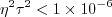
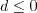
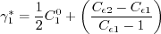
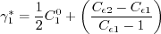

Public Access (formerly Langley Research Center)Turbulence Modeling Resource |
 NOTE: This page still needs to be checked for consistency with the original reference
NOTE: This page still needs to be checked for consistency with the original reference
Explicit Algebraic Stress k-kL Turbulence Model
This web page gives detailed information on the equations for a version of an Explicit Algebraic Stress Model (EASM) in k-kL form. Note: EASMs are also known as Explicit Algebraic Reynolds Stress Models (EARSM) and Algebraic Reynolds Stress Models (ARSM), but the monikers EASM, EARSM, and ARSM refer to the same thing. EASMs as a class have been developed by several independent groups over the years. See further discussion on the Explicit Algebraic Stress k-omega page.
Nonlinear EASMs are fundamentally different
from linear eddy viscosity models in the equation for obtaining the modeled turbulent stresses in the
Reynolds-averaged or Favre-averaged Navier-Stokes equations. Linear models use the Boussinesq
assumption for the constitutive relation:
Unless otherwise stated, for compressible flow with heat transfer this model is implemented as described on the page
Implementing Turbulence Models into the Compressible RANS Equations, with perfect gas
assumed and Pr = 0.72, Prt = 0.90, and Sutherland's law for dynamic viscosity.
Return to: Turbulence Modeling Resource Home Page Nonlinear ARSM k-kL (2018)
Model (k-kL-ARSM2018+J)
The reference for this nonlinear two-equation model is:
The model here is one of several described in the above reference. It includes a jet
correction (+J) by default, at the recommendation of the author of the model.
Note that the author passed away prior to checking this
webpage for consistency; please report any errors or
typos that you find to the page curator.
In this model, the turbulent stress relationship is a blend between a linear model and an explicit
algebraic stress relationship derived based on a three-basis approximation. It is given by:
Here,
with tr{ } indicating the trace, and
The Tij(1) is the linear part of the model, whereas
Tij(2) and Tij(4) are nonlinear terms
that model the anisotropy.
The two-equation model is given by the following:
where
The eddy viscosity from the model is given by:
The variable coefficient is obtained
by solving the cubic equation:
where
The correct root to choose from this cubic equation is the root with the lowest real part.
The methodology for solving this equation is the same as for the
EASMko2003 model.
The algorithm for determining this root is as follows.
If , then
If If , then
In this model, Other parameters are:
The functions are:
where
and A limiter is applied on with
The farfield boundary conditions given for this model are:
The solid wall boundary conditions are:
The constants for this model are:
In the "+J" correction for free shear and compressibility (which is on by default for this model), the k-equation
diffusion coefficient is given by:
Furthermore,
Note that this ARSM model reduces to the linear
k-kL-MEAH2015 model by setting:
Return to: Turbulence Modeling Resource Home Page
For nonlinear EASMs, this equation is altered to include
additional (nonlinear) terms, as detailed below.
Thus, including nonlinear turbulence models like
EASM is not simply a matter of computing 
 alone. One must also insure that the turbulent stress terms
alone. One must also insure that the turbulent stress terms
 are computed appropriately to include the
additional nonlinear components in the Navier-Stokes equations.
are computed appropriately to include the
additional nonlinear components in the Navier-Stokes equations.
with
and is the linear version of this model,
with  = 0.09 = constant and
.
= 0.09 = constant and
.
![{T_{ij}^{(1)}} = \left[ {{S_{ij}^*} - \frac{1}{3}tr\left\{ {{S^*}} \right\}} \right]](easmkkl_eqns/img3.png)
![{T_{ij}^{(2)}} = \left[ {{S_{ik}^*S_{kj}^*} - \frac{1}{3}tr\left\{ {{S^{*2}}} \right\}} \right]](easmkkl_eqns/img4.png)


Otherwise, define:


 , then
, then


is limited to be no
smaller than 0.0005.


 

![C_{(kL)_1} = \left[ \zeta_1 - \zeta_2 \left( \frac{(kL)}{k L_{vk}} \right)^2 \right]](easmkkl_eqns/img27.png)


 is the density,
is the density,
 is the
molecular dynamic viscosity, and d is the distance from the field point to the nearest wall.
Note that if U' = U'' = 0, then the (kL) production term should be identically zero.
is the
molecular dynamic viscosity, and d is the distance from the field point to the nearest wall.
Note that if U' = U'' = 0, then the (kL) production term should be identically zero.
 :
:


![f_p=min\left[ max\left(\frac{\cal P_k}{\left(C_{\mu}^{3/4} \rho k^{5/2}/(kL) \right)}
, C_{13} \right) , 1.0 \right]](easmkkl_eqns/img32.png)

where ,

 , and
, and
 are the reference (typically freestream) density,
speed of sound,
and viscosity, respectively.
are the reference (typically freestream) density,
speed of sound,
and viscosity, respectively.


![f_c = 1.5 (1.0-f_2)\left( M_t^2 - M_0^2 \right) \icalH \left[ M_t^2 - M_0^2 \right]](easmkkl_eqns/img48.png)
where a is the local speed of sound and
M0 = 0.10.
= 0.09 = constant,
Page Curators: Christopher Rumsey,
Ethan Vogel,
Clark Pederson
Last Updated: 04/25/2022